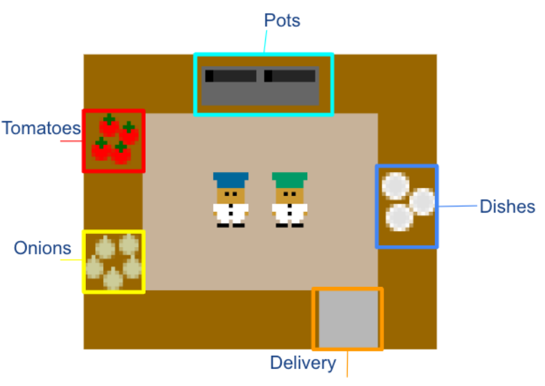

Current Research
I'm currently interested in pushing the capabilities of offline reinforcement learning, specifically in applications that involve interacting with humans, through a mixture of theory and applied work.
Zero-Shot Goal-Directed Dialogue via RL on Imagined Conversations
Joey Hong ,
Sergey Levine ,
Anca Dragan
arXiv ,
slides
Offline RL with Observation Histories: Analyzing and Improving Sample Complexity
Joey Hong ,
Anca Dragan ,
Sergey Levine
arXiv
Your browser does not support the video tag.

Learning to Influence Human Behavior with Offline Reinforcement Learning
Joey Hong ,
Sergey Levine ,
Anca Dragan
NeurIPS , 2023
arXiv , website
Confidence-Conditioned Value Functions for Offline Reinforcement Learning
Joey Hong ,
Aviral Kumar ,
Sergey Levine
ICLR , 2022 (oral)
arXiv
On the Sensitivity of Reward Inference to Misspecified Human Models
Joey Hong ,
Kush Bhatia ,
Anca Dragan
ICLR , 2022 (oral)
arXiv
When Should We Prefer Offline Reinforcement Learning Over Behavioral Cloning?
Aviral Kumar* ,
Joey Hong* ,
Anikait Singh ,
Sergey Levine
ICLR , 2021
arXiv ,
blog
{kind=link}